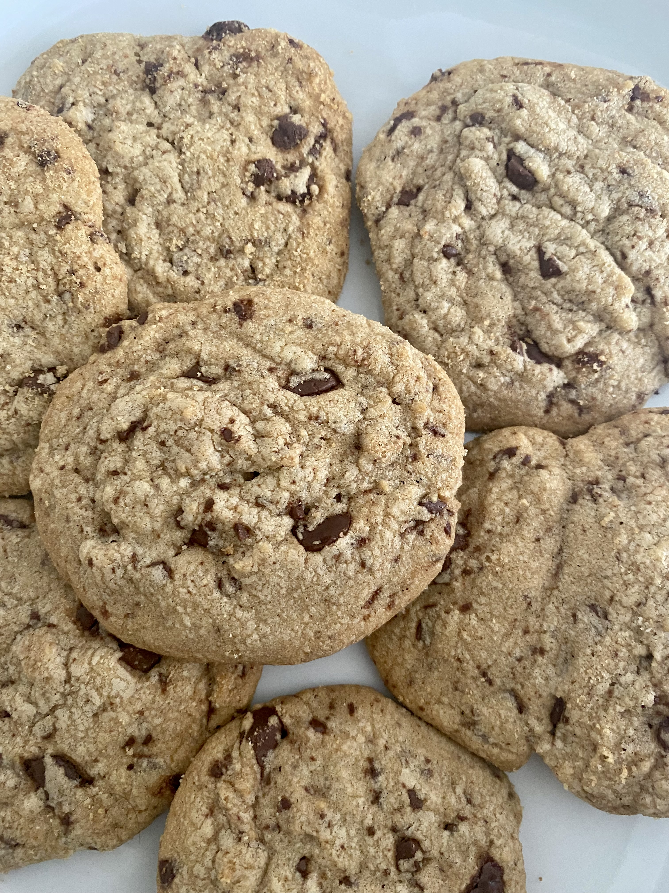

Składniki na 35 sztuk:
170 g masła
90 g drobnego cukru do wypieków
90 g miałkiego jasnego brązowego cukru
1 duże jajko
1 łyżeczka ekstraktu z wanilii
280 g mąki pszennej
3/4 łyżeczki sody oczyszczonej
150 g gorzkich drobinek czekoladowych (dark chocolate chips) lub posiekanej deserowej/gorzkiej czekolady
Wszystkie składniki powinny być w temperaturze pokojowej. Masło powinno być bardzo miękkie; na tyle, by nóż wchodził w nie bez oporu – jak pozostawione latem na blacie kuchennym. Jeśli tak nie jest, włożyć masło w temperaturze pokojowej do mikrofali na kilkanaście sekund by mniej więcej 1/3 masła się roztopiła.
Masło i oba cukry umieścić w misie miksera. Utrzeć do powstania bardzo puszystej masy maślanej, następnie dodać jajko i wanilię, dalej ucierając, do dokładnego utarcia składników. Do masy dodać mąkę pszenną, sodę oczyszczoną, następnie zmiksować do połączenia się składników. Na sam koniec wsypać chocolate chips i zmiksować do połączenia.
Płaską dużą blachę co ciasteczek wyłożyć papierem do pieczenia. Z ciasta formować kulki wielkości małego orzecha włoskiego a najprościej wyłożyć je blachę przy pomocy łyżki do lodów (gałkownicy). Układać je na blaszce pozostawiając kilkucentymetrowe odstępy między nimi – rozpłyną się mocno na boki; nie trzeba ich spłaszczać przed pieczeniem.
Ciastka z kawałkami czekolady piec w temperaturze 160ºC, z termoobiegiem, przez około 12 minut lub do momentu, gdy brzegi zaczną się zarumieniać, ale nie dłużej (całe zarumienione ciasteczka będą zbyt twarde po upieczeniu). Od razu po upieczeniu ciasteczka bedą bardzo miękkie, pozostawić je więc przez kilka minut do przestygnięcia na blaszce, następnie przenieść na kratkę do całkowitego wystudzenia.